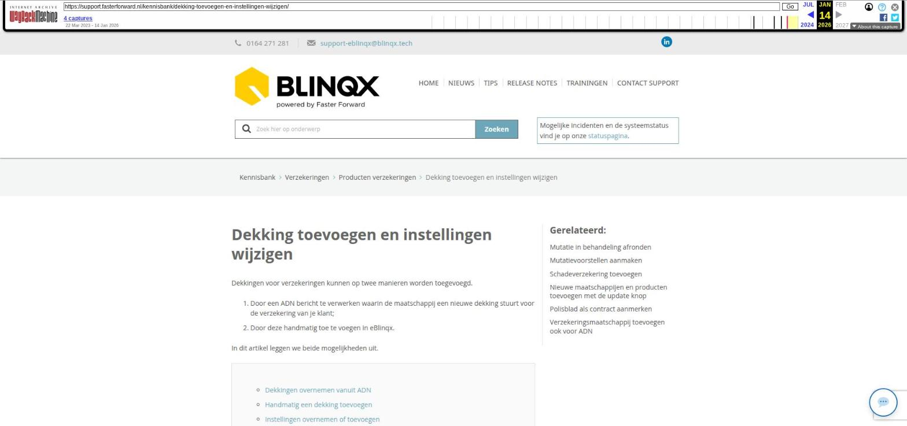

Dekking toevoegen en instellingen wijzigen

Tekstinhoud
Title: Dekking toevoegen en instellingen wijzigen | Support
URL: https://web.archive.org/web/20260114021252/https://support.fasterforward.nl/kennisbank/dekking-toevoegen-en-instellingen-wijzigen/
Source element: <article>
---
Dekking toevoegen en instellingen wijzigen
Dekkingen voor verzekeringen kunnen op twee manieren worden toegevoegd.
Door een ADN bericht te verwerken waarin de maatschappij een nieuwe dekking stuurt voor de verzekering van je klant;
Door deze handmatig toe te voegen in eBlinqx.
In dit artikel leggen we beide mogelijkheden uit.
Dekkingen overnemen vanuit ADN
Handmatig een dekking toevoegen
Instellingen overnemen of toevoegen
Dekkingen overnemen vanuit ADN
Zodra een verzekeraar mutaties naar jou toestuurt via ADN/Aplaza, dan komen deze binnen in de ADN inbox in eBlinqx. Vanuit hier kan je deze automatisch verwerken in de juiste klantdossiers. Hier lees je meer over het verwerken van ADN berichten.
Handmatig een dekking toevoegen
Als je nog geen verzekering hebt toegevoegd in een klantdossier, lees dan eerst de Case Schadeverzekeringen over het aanmaken van een verzekering.
Tijdens het aanmaken van de polis, maak je een dekking aan door in de pop-up op het icoon te klikken. Maak hier de gewenste dekkingen aan en klik op opslaan.
Dekking toevoegen als je werkt met mutatievoorstellen
Als je werkt met mutatievoorstellen, maak je voor een bestaande verzekering een extra (nieuwe) dekking aan door op het koffertje bij de verzekering te klikken.
Volg vervolgens de instructies over het aanmaken van een mutatievoorstel:
MUTATIEVOORSTEL AANMAKEN
Instellingen overnemen of toevoegen
Omdat nieuwe dekkingen soms op verschillenden en/of onvolledige manieren worden aangeleverd door maatschappijen, kun je zelf instellen hoe je nieuw ontvangen dekkingen verwerkt in eBlinqx.
Per maatschappij kan daarom worden ingesteld wat er gebeurt met een ontvangen dekking: overnemen of toevoegen.
Een consultant van Blinqx stelt dit voor je in. In uitzonderlijke gevallen doe je dit zelf.
Overnemen
De huidige dekkingen worden verwijderd en de ontvangen dekkingen worden aangemaakt.
Binnengekomen dekkingen worden automatisch herkend aan polisnummer, dekkingscode, verzekerd bedrag en/of eigen risico
Toevoegen
De nieuwe dekking wordt toegevoegd (en dus niet automatisch overgenomen). Je controleert beide dekkingen en bepaalt welke je wilt behouden.
Zelf instellen
Als je de inrichting van maatschappijen in eBlinqx zelf beheert, kun je dit zelf instellen. Ga dan onder 'Organisaties & Personen' naar de gewenste organisatie. Onder het tabblad 'Instellingen' voeg je een setting toe bij de rij 'ADN'. Je komt dan in het onderstaande scherm waarin je aangeeft of je voor deze organisatie de dekking wilt overnemen of toevoegen.
Laatste update: 15 oktober 2025
Was deze informatie nuttig?
Ja Nee